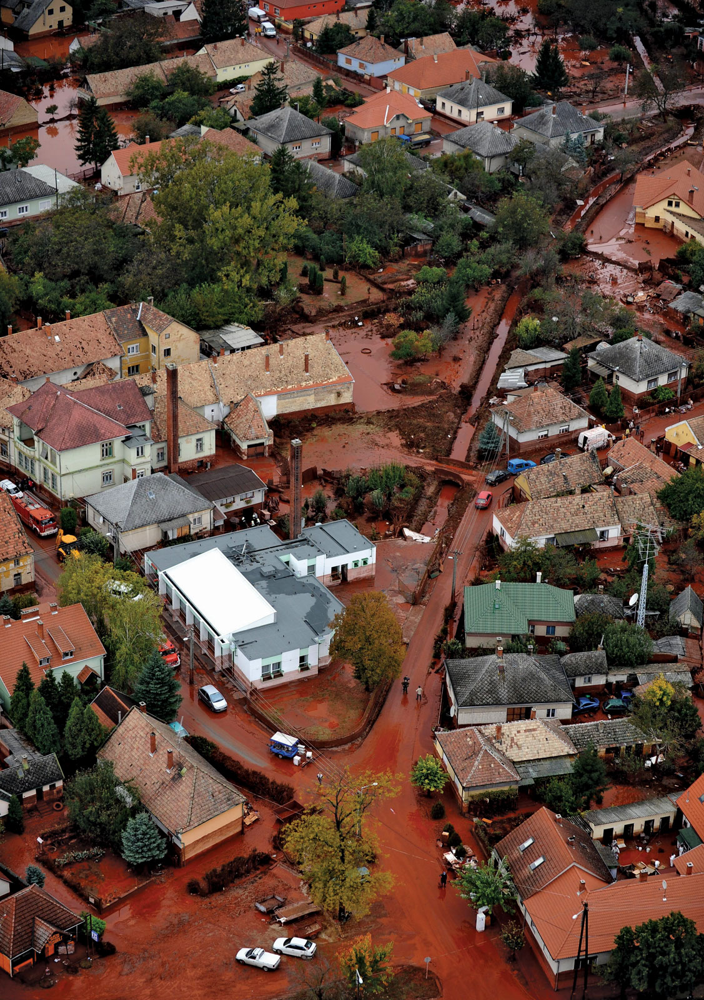

- Political developments
After it had become evident that the existing communist regime was doomed, the transitional government headed by Németh (November 1988–May 1990) began a systematic dialogue with the opposition. This took the form of a National Roundtable (March–September 1989), wherein the methods of a peaceful transition were discussed by the representatives of the government and the major opposition parties. As a result, Parliament passed a new election law, which introduced a system of proportional representation for a unicameral National Assembly to consist of 386 members. Of these 386 parliamentarians, 176 were to represent individual electoral districts, while the remaining 210 seats were to be allocated on the basis of voting for regional and national lists of candidates. Elections were duly held in two rounds in March and April 1990, resulting in a major victory for a right-centre Hungarian Democratic Forum-led coalition that included the Smallholders and the Christian Democrats and which took nearly three-fifths of the seats in Parliament. The opposition was represented by the Alliance of Free Democrats, which captured one-fourth of the seats, and the Hungarian Socialist Party and Fidesz, each of which garnered fewer than one-tenth of the seats. Because these three parties stood for three distinct ideologies, they were unable to create a united front, which put them at a considerable disadvantage.
The dominant figure in the right-centre coalition was József Antall, who served as postcommunist Hungary’s first prime minister until his death on December 12, 1993. A “liberal” leader, though mostly in the 19th-century sense of the word, Antall favoured an egalitarian and tolerant society. But he also wanted an ordered society with respect for law and national traditions and with concern for the Hungarian minorities in neighbouring states. Many Hungarians believed Antall made a major mistake when he failed to sweep entrenched communists from the Hungarian bureaucracy, government agencies, and security forces. Initially, these former communists kept a low profile, but many carried out the privatization of state enterprises in a way that lined their own pockets. The former “party aristocracy” became the new “moneyed aristocracy,” some of whom began to move back into the country’s political leadership as well (a pattern that was detectable in virtually all of the former Soviet-bloc countries.) As a consequence of the difficulties it faced and the problems it failed to tackle, the ruling coalition’s popularity waned after four years in power, and, in elections in 1994, the ex-communist Socialist Party captured 54 percent of the seats in Parliament. In spite of their absolute majority, the Socialists decided to form a coalition with the Alliance of Free Democrats, thus gaining control of nearly three-fourths of the seats in Parliament. This left-centre coalition was led by Gyula Horn, communist Hungary’s last foreign minister, who in that capacity had been at least partially responsible for the policies that led to Hungary’s reorientation to the West and the tearing down of the Iron Curtain. As prime minister, he pursued many of the policies initiated by Antall, including the privatization of the economy and the move toward membership in the North Atlantic Treaty Organization (NATO) and the European Union (EU). At the same time, he undid many of the Hungarian Democratic Forum’s cultural policies that had been designed to take Hungary in the direction of traditional patriotism. The alternation of left-centre and right-centre governments continued in the 1998 elections with the victory of a right-centre alliance consisting of the Fidesz–Hungarian Civic Party, the Smallholders, and the much-reduced Hungarian Democratic Forum, which together controlled slightly more than 55 percent of parliamentary seats. The leader of this coalition, Viktor Orbán, moved to strengthen the position of prime minister. He also oversaw the ascendance to NATO membership in 1999. Orbán’s greater attention to national issues, including the fate of the Hungarian minorities in the surrounding states, was frowned upon by the Socialist-led opposition. This created an ever-widening chasm between the right-centre and left-centre in Hungarian politics that carried into the 21st century. In 2002 the tables turned again, after a divisive election with a wide turnout (nearly three-fourths of those eligible voted) brought the Socialist–Free Democrats coalition back to power. The new prime minister, Peter Medgyessy, guided Hungary to membership in the EU in 2004 but also became the first postcommunist premier to resign, after losing the confidence of his party. He was succeeded in late 2004 by Ferenc Gyurcsány, a onetime party bureaucrat who made a fortune in the free-for-all business activities in the 1990s, including profiteering from the privatization of Hungarian state assets. In elections in 2006, the Gyurcsány-led Socialist–Free Democrats coalition became the first government to win consecutive terms since the end of the communist era.
- Economic and social change
Even though there were major differences in the ideological motivations of the various postcommunist political parties and governments, they all agreed on the main goals to be achieved. These included the privatization of state-owned assets, the creation of a politically and culturally pluralistic society, and the attainment of membership in the Western community of nations by joining NATO and the EU. Reforms under the Antall regime left no sector of the economy untouched, as the reintroduction of the market economy demanded a whole new economic and institutional infrastructure. Despite fits and starts, the first postcommunist government liberalized trade, deregulated most prices, and introduced and executed a wide-ranging privatization policy. Within two years of attaining power, it relaunched the Budapest Stock Exchange and a largely independent Central Bank and initiated the most-liberal foreign investment policy among the states of the former Soviet bloc. Moreover, despite the massive dislocation this approach caused, the government also introduced a bankruptcy policy that wrung out many of the inefficient state enterprises from the economy.
In early October 2010 a reservoir burst at an aluminum plant in Ajka, releasing a torrent of toxic red sludge (waste product from the aluminum-making process) that inundated large tracts of southwestern Hungary, killing 10 people and injuring more than 100. Quick action by the Hungarian government averted a much larger environmental disaster, however, as emergency crews were able to dilute much of the spill’s strongly alkaline content before it contaminated the Danube. 
Fidesz used its parliamentary majority throughout 2010 and 2011 to enact a series of sweeping legislative measures that culminated in the adoption of a new constitution on January 1, 2012. Conservative moral and religious themes figured prominently in the new constitution, which had a Christian emphasis, defined marriage as the union of a man and a woman, and declared that a fetus was entitled to legal protection from the moment of conception. Protests against the new constitution ensued in Hungary, and harsh foreign criticism of it included a report by the Council of Europe that raised concerns about judicial reforms that curtailed the independence of Hungarian courts. Foreign objections also played a major role in prompting the Orbán government to scale back a proposed media law that would have given Fidesz a great deal of direct control over the press. The debt crisis that gripped the euro zone was a drag on Hungary’s finances, and all three major ratings agencies had cut the country’s credit rating to junk status by early 2012. Concern within the EU over the Hungarian government’s debt management and what some saw as the regressive nature of Hungary’s new constitution threatened continued EU and IMF financial and economic support for Hungary. Compliance with European law was seen as an essential precondition to the delivery of loan payments to Hungary, and investors and EU officials alike called for revisions to the constitution.